Last Updated: 2020-07-07
Overview
The Mule Runtime supports SAP integration through our Anypoint Connector for SAP, an SAP-certified Java connector that leverages the SAP Java Connector (JCo) libraries, thus allowing Mule applications to:
- Execute BAPI functions over the RFC protocol, supporting Synchronous RFC (sRFC), Transactional RFC (tRFC), and Queued RFC (qRFC)
- Act as a JCo Server to be called as a BAPI over sRFC, tRFC, and qRFC.
- Send IDocs over tRFC and qRFC.
- Receive IDocs over tRFC and qRFC.
- Transform SAP objects (JCo Function/BAPI & IDocs) to and from XML.
What you'll build
This lab will show you how to use the SAP Connector as an IDoc Inbound Endpoint within your flow. The project, once deployed, will serve as a JCo Server and listen for an IDoc of type DEBMAS. Once it receives the IDoc, it will output the content to a file on your local machine.
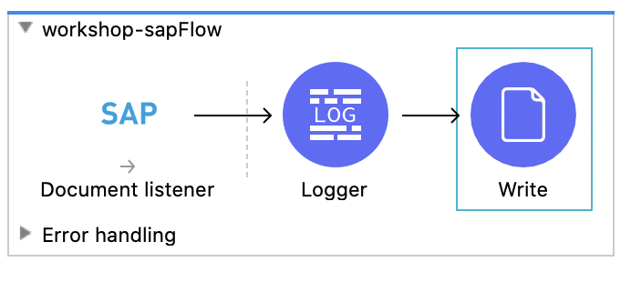
What you'll learn
- How to configure the SAP Connector to act as an IDoc Listener
This codelab is focused on integrating with SAP ECC R/3 or SAP S/4 HANA On-Premises
What you'll need
- Anypoint Studio 7.5.x
- SAP Connector 5.x
- SAP ECC R3 and/or S/4 HANA On-Premises
- SAP GUI
Create a new project
Open Anypoint Studio and create a new Mule Project by going to File > New > Mule Project.

In the New Mule Project window, give the project a name (e.g. workshop-sap), select a Runtime, and then click on Finish
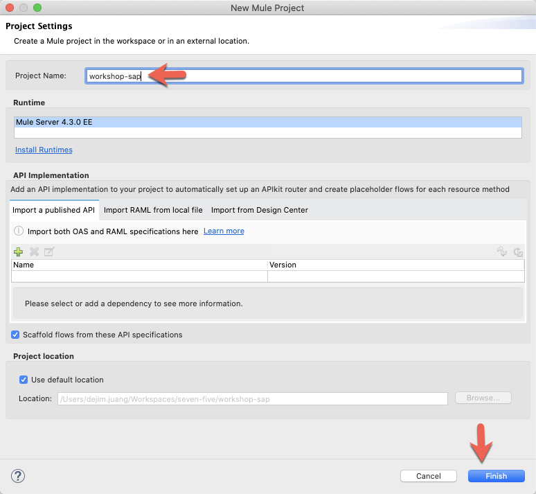
To start off, we're going to add the SAP Connector to the canvas. In the Mule Palette, click on Search in Exchange

In the Add Modules to Project window, type in ‘sap' for the search term (1) In the Available modules (2) select SAP Connector - Mule 4 and click on Add (3) Click on Finish (4) to add the module to the project.

From the list of operations from SAP, drag and drop the Document listener operation onto the canvas.
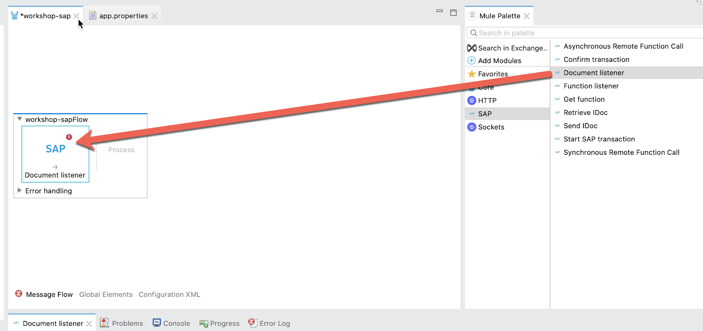
Create Configuration Properties File
We'll configure properties in a separate configuration file. Right-click on the src/main/resources folder and select New > File and name the file app.properties

Copy and paste the following into the newly create file. Populate the properties with the credentials and settings for your SAP instance. If needed, you can use the credentials below from our sandbox instance. Contact the instructor for the login and password.
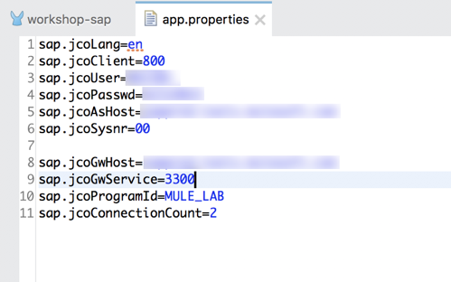
sap.jcoLang=en
sap.jcoClient=
sap.jcoUser=
sap.jcoPasswd=
sap.jcoAsHost=
sap.jcoSysnr=
sap.jcoGwHost=
sap.jcoGwService=3300
sap.jcoProgramId=
sap.jcoConnectionCount=2In the canvas, click on Global Elements (1) and then click on Create (2)
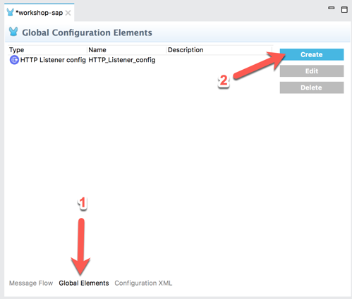
In the Filter, type in ‘prop' (1) and select Configuration properties (2) and then click on OK (3)

In the Configuration properties, click on the browse file button (1).
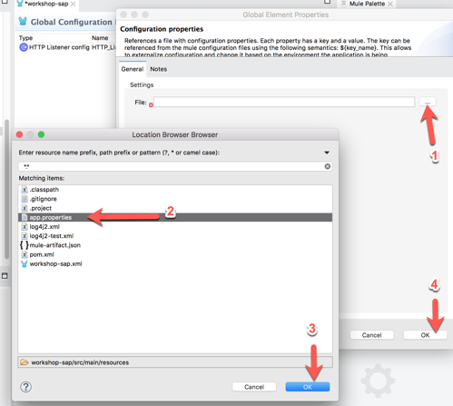
Locate and select the app.properties file you created (2) and then click on OK (3) Back on the previous window, click on OK to save your changes (4).
Add SAP Connector Configuration
Let's go back to the SAP Connector and use those properties to connect. In the Document listener operation, click on the green plus sign to configure the Connector configuration.
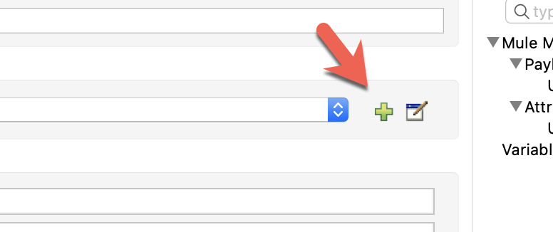
Change the Connection drop-down to Simple connection provider
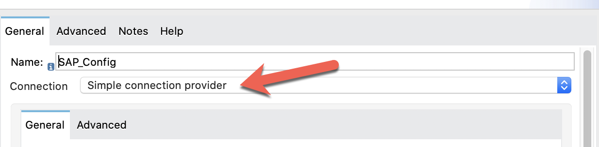
In the General tab, under Required Libraries, click on the Configure button next to the iDoc Library field. Select Use local file

In the Choose local file, click on Browse and point it to the sapidoc3.jar file. Keep the default settings and click on OK

Back in the SAP Config window, there should be a green checkmark next to the iDoc Library field. Next, let's add the JCo Library. Click on Configure and select Use local file

In the Choose local file window, click on Browse and point it to the sapjco3.jar file. Keep the default settings and click on OK.

Back in the SAP Config window, there should be a green checkmark next to the JCo Library field.

Next, let's add the JCo Native Library. Click on Configure and select Use local file
For the JCO native libraries, they are platform specific. When you go to browse and select the files, be sure to change the dropdown to the specific extension you're looking for. Once you select the file, click on Open
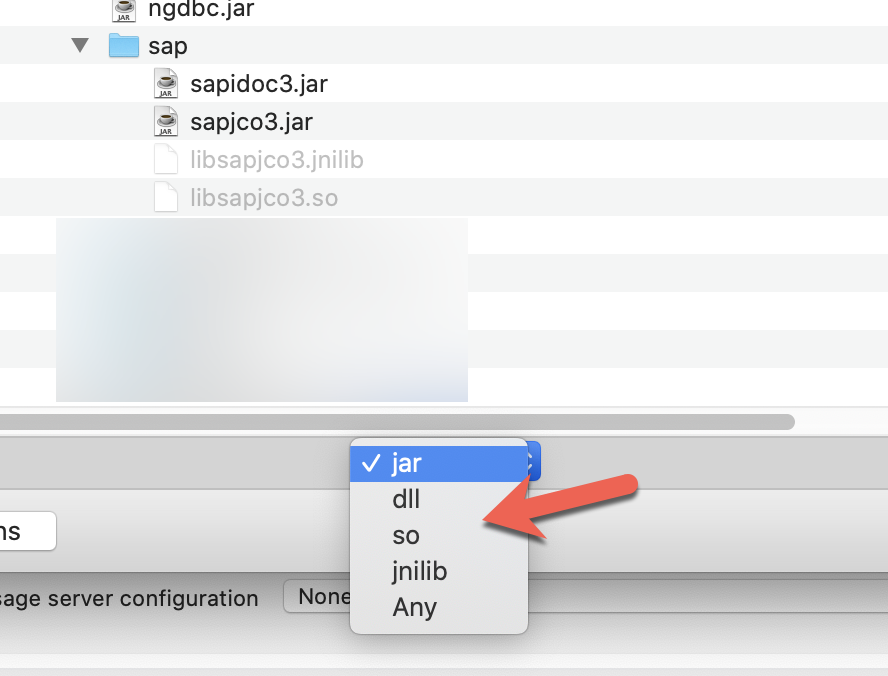
JCo Platform-specific native libraries:
- Windows - sapjco3.dll
- Mac OS - libsapjco3.jnilib
- Linux - libsapjco3.so
Keep the default settings on the Choose local file window and click on OK
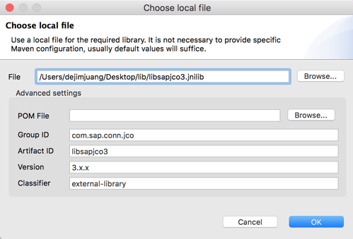
Back in the SAP Config window, all the required libraries should be green now.
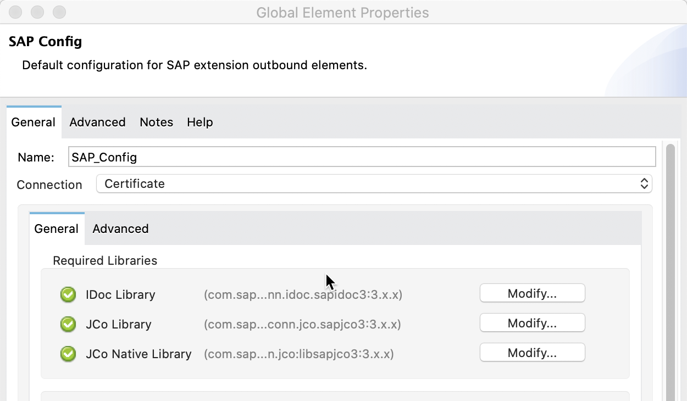
Fill in the remaining fields with the corresponding property placeholders below.
Application Server Host: | ${sap.jcoAsHost} |
Username | ${sap.jcoUser} |
Password | ${sap.jcoPasswd} |
System Number | ${sap.jcoSysnr} |
Client | ${sap.jcoClient} |

Click on Test Connection to make sure everything has been configured correctly before clicking on OK.
Configure the Listener settings
Back on the Document listener tab, fill in the properties for the listener using the property placeholders from the app.properties file that we just created
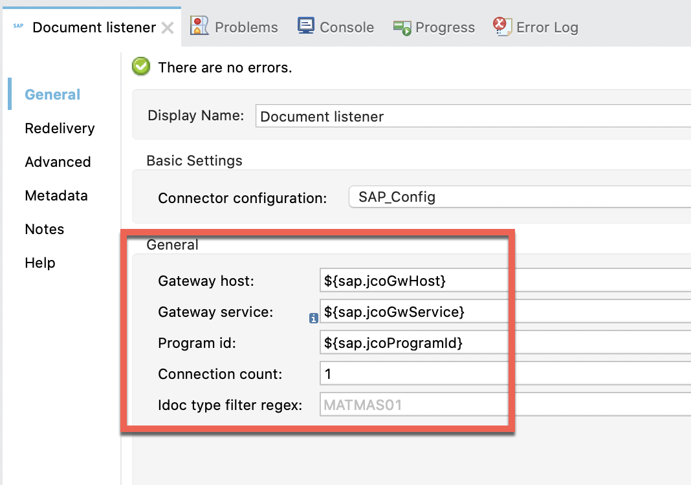
Gateway Host: | ${sap.jcoGwHost} |
Gateway Service | ${sap.jcoGwService} |
Program id | ${sap.jcoProgramId} |
That completes the setup for the SAP Connector to act as a IDoc listener. Next we'll add some logging to see the event in the debug Console.
Add Log Connector
For logging purposes, let's drag and drop a Logger into flow.
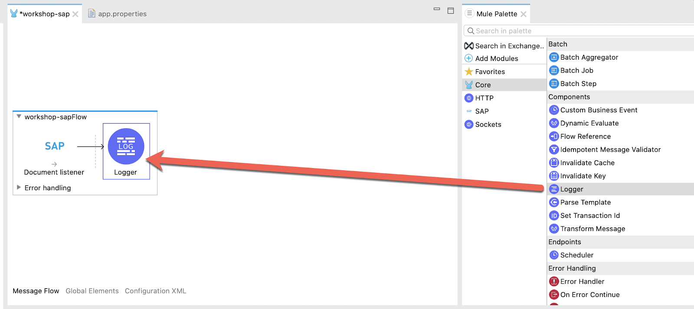
In the Mule Properties view for the Logger, enter the following into the Message field
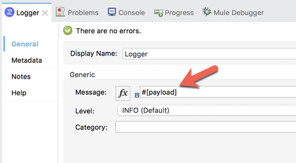
Add File Connector
In the Mule Palette, click on Add Modules and drag and drop the File module to where it says Drag and drop here to add to project.
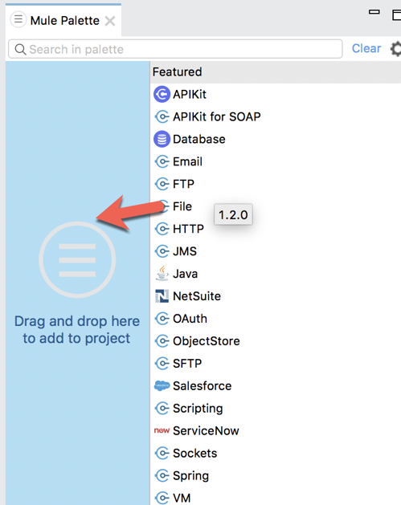
Select the File module and then select the Write operation and drag and drop that into the canvas. Place it after the Logger component.
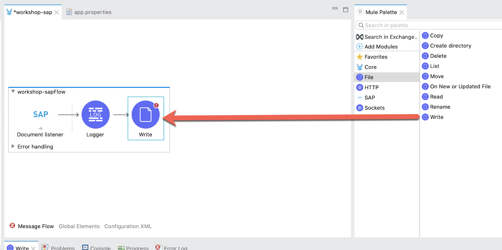
Before we setup the Write operation, let's create a file placeholder in the src/main/resources folder of the project where the IDOC will be written to.
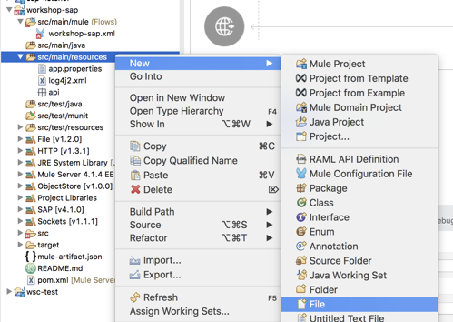
Right click on the src/main/resources folder and select New > File.
Give the file a name (e.g. debmas.xml) and click on Finish
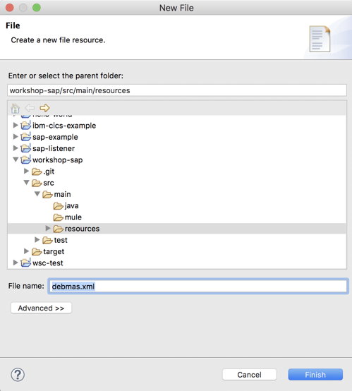
Back in the Mule properties tab for the Write operation, click on the Browse button next to the Path field in the General section.
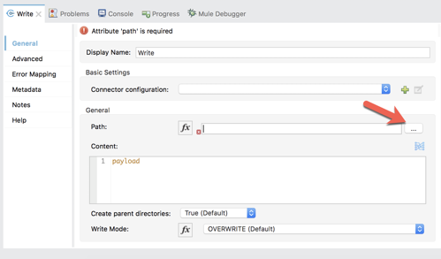
Navigate to and select the file you created and then click on Open
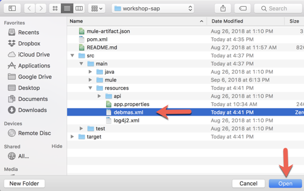
Run Project
Right-click on the canvas and select Run project workshop-sap
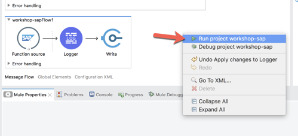
Execute IDoc in SAP GUI
In SAP GUI, enter in SAP transaction code BD12
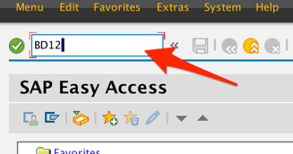
3.3 Enter a customer ID in the Customer field. If you don't have one, you can use transaction code XD03
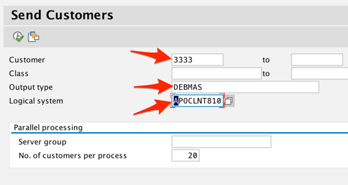
In the Output type field, enter DEBMAS
In the Logical system field, select the Logical System that was set up as the receiver.
Click on Execute to send the IDoc to Mule.
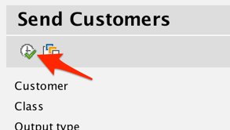
If configured successfully, you should see two Information windows. One is for the setup of the IDoc for the customer, the second is the outbound processing of the IDoc to be sent to the JCo Server.
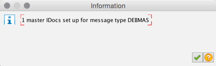
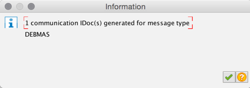
Check result in Anypoint Studio
Back in Anypoint Studio, in the Console tab, you should see the Logger output the IDoc for the customer.
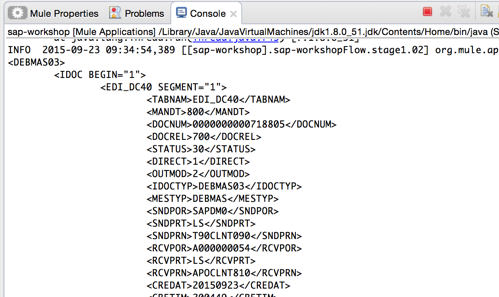
Lastly, a file should also be created where you configured the Path field in the File Connector.
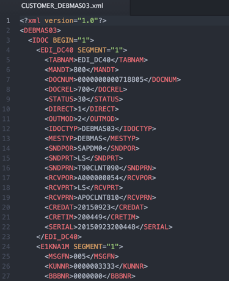
Congratulations, you've successfully built a Mule application that listens for IDocs from SAP. Once it receives the IDoc, it writes it to a folder.
What's next?
Check out some of these codelabs...
- TBD